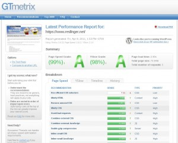

Après l'optimisation d'Apache par la compression de la sortie, nous avons aussi la possibilité de fixer les valeurs pour le cache du navigateur client. De ce fait, dès le second click de souris du visiteur, le nombre de requêtes sur le serveur chutera et soulagera d'autant le serveur.
La configuration du cache passe simplement par l'ajout du bloque suivant dans le fichier httpd.conf:
# Turn on Expires and set default to 0
ExpiresActive On
ExpiresDefault A0
# Set up caching on media files for 1 year (forever?)
<FilesMatch "\.(flv|ico|pdf|avi|mov|ppt|doc|mp3|wmv|wav)$">
ExpiresDefault A29030400
Header append Cache-Control "public"
</FilesMatch>
# Set up caching on media files for 1 week
<FilesMatch "\.(gif|jpg|jpeg|png|swf|js|css)$">
ExpiresDefault A604800
Header append Cache-Control "public"
</FilesMatch>
# Set up 2 Hour caching on commonly updated files
<FilesMatch "\.(xml|txt|html)$">
ExpiresDefault A7200
Header append Cache-Control "proxy-revalidate"
</FilesMatch>
# Force no caching for dynamic files
<FilesMatch "\.(php|cgi|pl|htm)$">
ExpiresActive Off
Header set Cache-Control "private, no-cache, no-store, proxy-revalidate, no-transform"
Header set Pragma "no-cache"
</FilesMatch>
Voir aussi ce lien
Depuis quelques temps, je me suis occupé de l'optimisation de mon wordpress. Pas de modification de code, seulement l'installation de plugins et de la configuration. Les plugins que j'ai installé sont:
Head Cleaner: Head Cleaner permet la minification et la concaténation des CSS et JS. Et il le fait bien
W3 Total Cache: Enfin, W3 Total Cache permet la mise en cache des pages. Il faut penser à désactiver la partie minification car elle est déjà prise en charge par Head Cleaner et WP-Minifier.
J'avais aussi testé Theme Minifier pour mimifier les thémes, mais Head Cleaner prend la minification du thème à la volée. En plus, Theme Minifier casse la traduction du thème.
Enfin bref, après de nombreux test et pas mal de temps, j'obtiens un beau résultat sur les sites comme www.gtmetrix.com. Je vous laisse juger du résultat par vous même.

Aujourd'hui, un petit peu de configuration dans Apache pour activé la compression des pages. La compression des pages permet de réduire la quantité de données à transférer , la bande passante s'en retrouve soulagée ainsi que le temps de transfert (normale, il y a moins de données).
Pour y arriver, il faut contrôler la présence des modules mod_deflate.so et mod_headers.so dans le répertoire des modules d'apache. S'ils sont présent, nous n'avons qu'un peu de configuration à faire.
Dans le répertoire conf.d, il faut créé (ou modifier) le fichier mod_deflate.conf pour y inclure le contenu suivant:
<Location />
# Ajoute un filtre
SetOutputFilter DEFLATE
BrowserMatch ^Mozilla/4 gzip-only-text/html
BrowserMatch ^Mozilla/4\.0[678] no-gzip
BrowserMatch \bMSI[E] !no-gzip !gzip-only-text/html
# Ne pas compresser les images
SetEnvIfNoCase Request_URI \
\.(?:gif|jpe?g|png)$ no-gzip dont-vary
Header append Vary User-Agent env=!dont-vary
</Location>
Ensuite, il ne reste plus qu'à ajouter la ligne:
SetOutputFilter DEFLATE
dans chacuns des vhosts où l'on veut activer la compression des pages.
Dans cet article, nous allons installer un terminal en mode web. À quoi celà peut servir ? Ben à avoir un accès externe pour aller voir des configurations par exemple lorsque le protocole n'est pas authorisé vers l'extérieur pour des raisons de sécurité. Ce terminal n'étant qu'une page web, il est impossible de faire transiter autre chose que ce qui s'affiche dans la fenêtre du terminal. Donc pas de transfert de fichiers ni de tunnel.
Pour l'installation, il suffit de taper la commande suivante :
yum install Ajaxterm
Puis pour l'activer,
service ajaxterm start
chkconfig ajaxterm on
Enfin, pour pouvoir y accéder, il faut rajouter ces lignes dans le vhost d'apache:
ProxyPass /ajaxterm/ http://localhost:8022/
ProxyPassReverse /ajaxterm/ http://localhost:8022/
Si le titre ne vous plait pas, vous pouvez le modifier via un sed par exemple dans le fichier /usr/share/ajaxterm/ajaxterm.html :
sed 's|\(<title>\)Ajaxterm\(</title>\)|\1Nouveau Titre\2|' -i /usr/share/ajaxterm/ajaxterm.html
RedirectTemp /statistiques/index.html http://www.site.net/awstats/awstats.pl?config=www.site.net
<VirtualHost *:80>
ServerName www.mon-site.fr
ProxyRequests Off
##ProxyPreserveHost Off|On
#Header add Set-Cookie "ROUTEID=.%{BALANCER_WORKER_ROUTE}e; path=/" env=BALANCER_ROUTE_CHANGED
<Proxy balancer://mycluster>
BalancerMember http://www1.mon-site.fr/
##BalancerMember http://192.168.1.xxx:80
#BalancerMember http:// route=1
#BalancerMember http:// route=2
#ProxySet stickysession=ROUTEID
</Proxy>
<Proxy balancer://static>
BalancerMember http://static.mon-site.fr/
</Proxy>
ProxyPass /images/ balancer://static/images/
ProxyPassReverse /images/ balancer://static/images/
ProxyPass /include/ balancer://static/include/
ProxyPassReverse /include/ balancer://static/include/
ProxyPass /script/ balancer://static/script/
ProxyPassReverse /script/ balancer://static/script/
ProxyPass / balancer://mycluster
ProxyPassReverse / balancer://mycluster
</VirtualHost>
# SSLProxyEngine On
# ProxyPass /wp-admin !
# ProxyPass / https://www.site.net/
# ProxyPassReverse / https://www.site.net/
# ProxyRequests off
# ProxyReceiveBufferSize 8192
# ProxyIOBufferSize 262144
#
# Directives to allow use of AWStats as a CGI
#
Alias /awstatsclasses "/usr/local/awstats/wwwroot/classes/"
Alias /awstatscss "/usr/local/awstats/wwwroot/css/"
Alias /awstatsicons "/usr/local/awstats/wwwroot/icon/"
ScriptAlias /awstats/ "/usr/local/awstats/wwwroot/cgi-bin/"
#
# This is to permit URL access to scripts/files in AWStats directory.
#
<Directory "/usr/local/awstats/wwwroot">
Options None
AllowOverride None
Order deny,allow
Deny from all
Allow from xx.xx.xx.xx
</Directory>
</VirtualHost>
Bienvenue sur mon site. Sa mise en place sera progressive et contiendra essentiellement des données techniques. Pourquoi? Parce que je suis administrateur et comme tout administrateur, je réutilise les briques que j'ai déjà utilisé. Par conséquent, ce site contiendra des exemples de configuration de logiciels, des infrastructures, des liens et autre idées. Ce site se complètera avec le temps.
Bonne navigation.
{kind=link}